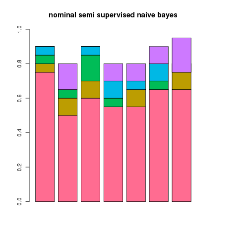
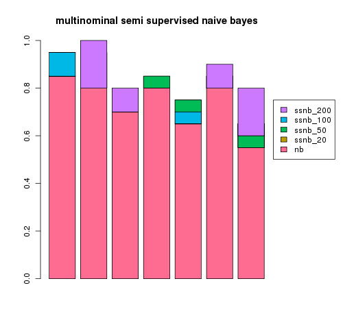

<< semi supervised naive bayes index v2: rewriting for scale >>
let's rerun the same tests, using the same method, we did before.
again as a test i took a random sample of 300 rss articles from a total of 8000.
30 articles were used for the training set, 30 for the test set with a varying number were used for the unlablled extras.
the experiment was repeated 7 times for a different random 300 articles with the results plotted below showing the addition gain over naive bayes (nb) using a semi supervised version (ssnb) with 20, 50, 100 or 200 unlabelled examples.

an interesting thing to note is that the default multinominal supervised classifier does a hell of a lot better than the default nominal supervised classifier before we even consider the semi supervised part...
it also scales well past 200 articles but, doesn't really need it for this simple two class problem it seems
TODO! a 5-6 class problem and some graphs showing some real scaling, in the mean time i've got distracted by something else!
march two thousand and ten